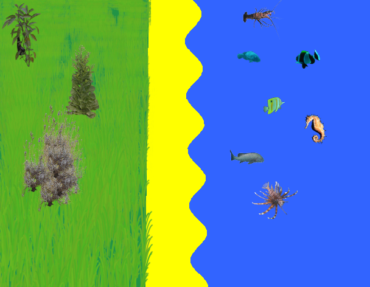

Kian monsters
Good and evil
Kian monsters are mostly evil, but can sometimes be good. Good ones shelter people and give travelers food and water. Evil ones destroy everything in their path.
Examples of good monsters
Fairy, Bird person, Dragon, Wind creature.
Examples of evil monsters
Undead, ElementKian monsters are mostly evil, but can sometimes be good. Good ones shelter people and give travelers food and water. Evil ones destroy everything in their path. Elemental beast, Imp, Orc, Goblin, Oga, Giant spider.
Habitats
Evil monsters live in the dark, damp and the unknown territory. They usely live in civilisations. Good monsters live with humans or with their own spieces.+
